Unit 6 - Hypotheses & Comparing Means
PSYC 640 - Fall 2024
Reminders
Journal Entries
Lab #1 - Due 10/6
Last Class
- Descriptive Statistics
- Correlations
- Professor made it complicated, but we got some pretty tables out of it with
sjPlot()
- Professor made it complicated, but we got some pretty tables out of it with
Today…
Hypotheses & NHST
Comparing Two Means
- One-Sample, Independent, Paired
Comparing MANY MUCH Means
Hypothesis
What is a hypothesis?
In statistics, a hypothesis is a statement about the population. It is usually a prediction that a parameter describing some characteristic of a variable takes a particular numerical value, or falls into a certain range of values.
Hypothesis
For example, dogs are characterized by their ability to read humans’ social cues, but it is (was) unknown whether that skill is biologically prepared. I might hypothesize that when a human points to a hidden treat, puppies do not understand that social cue and their performance on a related task is at-chance. We would call this a research hypothesis.
This could be represented numerically as, as a statistical hypothesis:
\[\text{Proportion}_{\text{Correct Performance}} = .50\]
The null hypothesis
In Null Hypothesis Significance Testing, we… uh… test a null hypothesis.
A null hypothesis ( \(H_0\) ) is a statement of no effect. The research hypothesis states that there is no relationship between X and Y, or our intervention has no effect on the outcome.
- The statistical hypothesis is either that the population parameter is a single value, like 0, or that a range, like 0 or smaller.
The alternative hypothesis
According to probability theory, our sample space must cover all possible elementary events. Therefore, we create an alternative hypothesis ( \(H_1\) ) that is every possible event not represented by our null hypothesis.
\[H_0: \mu = 4\] \[H_1: \mu \neq 4\]
\[H_0: \mu \leq -7\] \[H_1: \mu > -7\]
The tortured logic of NHST
We create two hypotheses, \(H_0\) and \(H_1\). Usually, we care about \(H_1\), not \(H_0\). In fact, what we really want to know is how likely \(H_1\), given our data.
\[P(H_1|Data)\] Instead, we’re going to test our null hypothesis. Well, not really. We’re going to assume our null hypothesis is true, and test how likely we would be to get these data.
\[P(Data|H_0)\]
Example #1
Consider the example of puppies’ abilities to read human social cues.
Let \(\Pi\) be the probability the puppy chooses the correct cup that a person points to.
In a task with two choices, an at-chance performance is \(\Pi = .5\). This can be the null hypothesis because if this is true, than puppies would make the correct choice as often as they would make an incorrect choice.
Note that the null hypothesis changes depending on the situation and research question.
Example #1 - Hypotheses
As a dog-lover, you’re skeptical that reading human social cues is purely learned, and you have an alternative hypothesis that puppies will perform well over chance, thus having a probability of success on any given task greater than .5.
\[H_0: \Pi = .5\] \[H_1: \Pi \neq .5\]
Example #1
To test the null hypothesis, you a single puppy and test them 12 times on a pointing task. The puppy makes the correct choice 10 times.
The question you’re going to ask is:
- “How likely is it that the puppy is successful 10 times out of 12, if the probability of success is .5?”
This is the essence of NHST.
You can already test this using what you know about the binomial distribution.
Code
trial = 0:12
data.frame(trial = trial, d = dbinom(trial, size = 12, prob = .5),
color = ifelse(trial == 10, "1", "2")) %>%
ggplot(aes(x = trial, y = d, fill = color)) +
geom_bar(stat = "identity") +
guides(fill = "none")+
scale_x_continuous("Number of puppy successes", breaks = c(0:12))+
scale_y_continuous("Probability of X successes") +
theme(text = element_text(size = 20))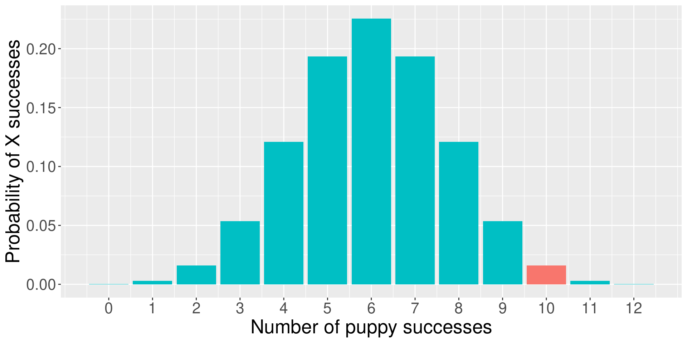
Complications with the binomial
The likelihood of the puppy being successful 10 times out of 12 if the true probability of success is .5 is 0.02. That’s pretty low! That’s so low that we might begin to suspect that the true probability is not .5.
But there’s a problem with this example. The real study used a sample of many puppies (>300), and the average number of correct trials per puppy was about 8.33. But the binomial won’t allow us to calculate the probability of fractional successes!
What we really want is not to assess 10 out of 12 times, but a proportion, like .694. How many different proportions could result puppy to puppy?
Our statistic is usually continuous
When we estimate a statistic for our sample – like the proportion of puppy success, or the average IQ score, or the relationship between age in months and second attending to a new object – that statistic is nearly always continuous. So we have to assess the probability of that statistic using a probability distribution for continuous variables, like the normal distribution. (Or t, or F, or \(\chi^2\) ).
What is the probability of any value in a continuous distribution?
Instead of calculating the probability of our statistic, we calculate the probability of our statistic or more extreme under the null.
The probability of success on 10 trials out of 12 or more extreme is 0.01.
Code
data.frame(trials = trial, d = dbinom(trial, size = 12, prob = .5),
color = ifelse(trial %in% c(0,1,2, 10,11,12), "1", "2")) %>%
ggplot(aes(x = trials, y = d, fill = color)) +
geom_bar(stat = "identity") +
guides(fill = "none")+
scale_x_continuous("Number of successes", breaks = c(0:12))+
scale_y_continuous("Probability of X successes") +
theme(text = element_text(size = 20))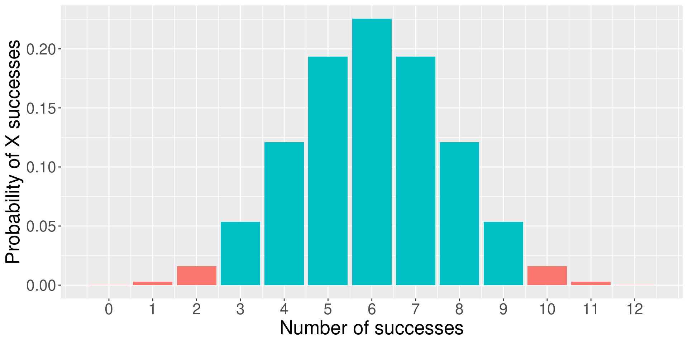
As we have more trials…
Code
data.frame(trials = 0:24,
d = dbinom(0:24, size = 24, prob = .5),
color = ifelse(0:24 %in% c(0:4, 20:24), "1", "2")) %>%
ggplot(aes(x = trials, y = d, fill = color)) +
geom_bar(stat = "identity") +
guides(fill = "none")+
scale_x_continuous("Number of trials hired", breaks = c(0:24))+
scale_y_continuous("Probability of X trials hired") +
theme(text = element_text(size = 20))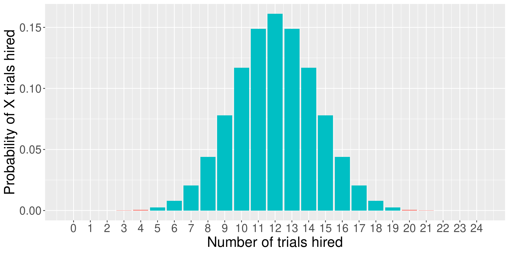
… and more trials…
Code
data.frame(trials = 0:36,
d = dbinom(0:36, size = 36, prob = .5),
color = ifelse(0:36 %in% c(0:6, 30:36), "1", "2")) %>%
ggplot(aes(x = trials, y = d, fill = color)) +
geom_bar(stat = "identity") +
guides(fill = "none")+
scale_x_continuous("Number of trials hired", breaks = c(0:36))+
scale_y_continuous("Probability of X trials hired") +
theme(text = element_text(size = 20))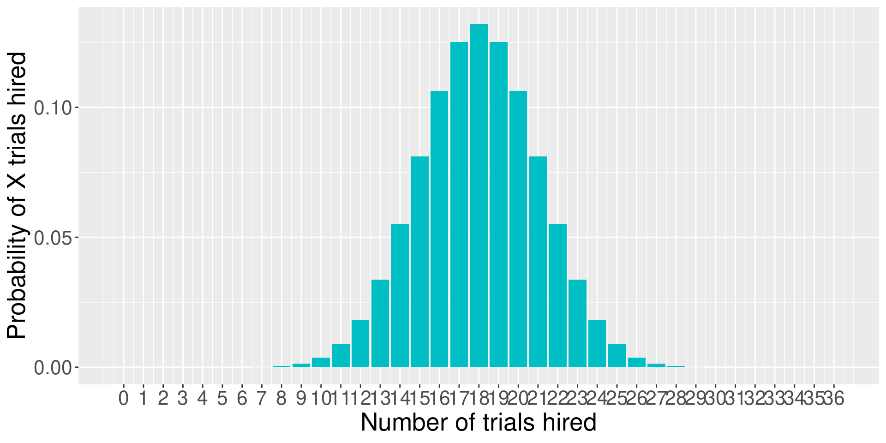
If our measure was continuous, it would look something like this.
Code
gg_color_hue <- function(n) {
hues = seq(15, 375, length = n + 1)
hcl(h = hues, l = 65, c = 100)[1:n]
}
colors = gg_color_hue(2)
data.frame(x = seq(-4,4)) %>%
ggplot(aes(x=x)) +
stat_function(fun = function(x) dnorm(x), geom = "area", fill = colors[2])+
stat_function(fun = function(x) dnorm(x), xlim = c(-4, -2.32), geom = "area", fill = colors[1])+
stat_function(fun = function(x) dnorm(x), xlim = c(2.32, 4), geom = "area", fill = colors[1])+
geom_hline(aes(yintercept = 0)) +
scale_x_continuous(breaks = NULL)+
labs(x = "successes",
y = "Probability of X successes") +
theme(text = element_text(size = 20))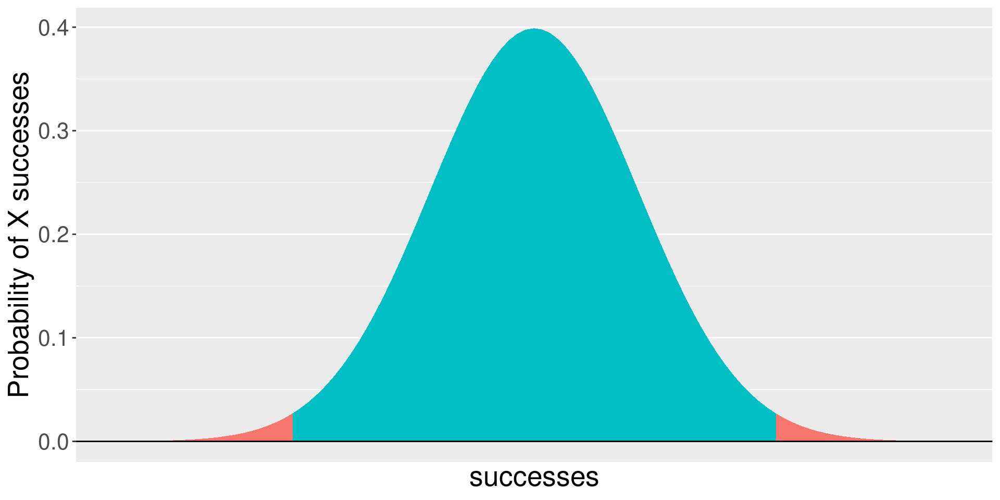
What are the steps of NHST?
Define null and alternative hypothesis.
Set and justify alpha level.
Determine which sampling distribution ( \(z\), \(t\), or \(\chi^2\) for now)
Calculate parameters of your sampling distribution under the null.
- If \(z\), calculate \(\mu\) and \(\sigma_M\)
- Calculate test statistic under the null.
- If \(z\), \(\frac{\bar{X} - \mu}{\sigma_M}\)
- Calculate probability of that test statistic or more extreme under the null, and compare to alpha.
Comparing Means
Converting to a t-score and checking against the t-distribution
One-Sample
Independent Sample
Paired Sample
but first…Degrees of Freedom
Degrees of Freedom: the number of values in the final calculation of a statistic that are free to vary
Example: The mean of 3 numbers. First two can be any number, but the final number has to bring the calculation to the correct point.
Example 2: Drawing a triangle
One Sample t-test
t-tests were developed by William Sealy Gosset, who was a chemist studying the grains used in making beer. (He worked for Guinness.)
Specifically, he wanted to know whether particular strains of grain made better or worse beer than the standard.
He developed the t-test, to test small samples of beer against a population with an unknown standard deviation.
- Probably had input from Karl Pearson and Ronald Fisher
Published this as “Student” because Guinness didn’t want these tests tied to the production of beer.
One-sample tests compare your given sample with a “known” population.
Research question: does this sample come from this population?
Hypotheses
\(H_0\): Yes, this sample comes from this population.
\(H_1\): No, this sample comes from a different population.
To calculate the t-statistic, we generally use this formula:
\[t_{df=N-1} = \frac{\bar{X}-\mu}{\frac{\hat{\sigma}}{\sqrt{N}}}\]
The heavier tails of the t-distribution, especially for small N, are the penalty we pay for having to estimate the population standard deviation from the sample.
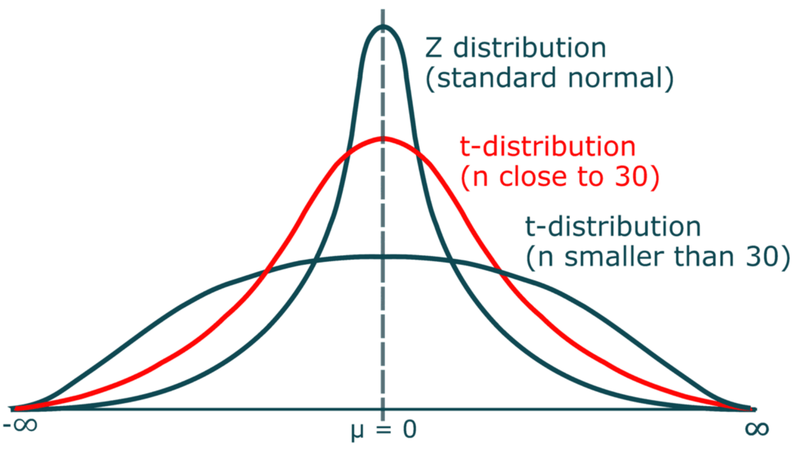
Example
For examples today, we will use this dataset:
100 students from New York
100 students from New Mexico
Assumptions of the one-sample t-test
Normality. We assume the sampling distribution of the mean is normally distributed. Under what two conditions can we be assured that this is true?
Independence. Observations in the dataset are not associated with one another. Put another way, collecting a score from Participant A doesn’t tell me anything about what Participant B will say. How can we be safe in this assumption?
A brief example
Using the Census at School data, we find that New York students who participated in a memory game ( \(N = 100\) ) completed the game in an average time of 42.29 seconds ( \(s = 13.29\) ). We know that the average US student completed the game in 45.04 seconds. How do our students compare?
Hypotheses
\(H_0: \mu = 45.05\)
\(H_1: \mu \neq 45.05\)
\[\mu = 45.05\]
\[N = 100\]
\[ \bar{X} = 42.29 \]
\[ s = 13.29 \]
One Sample t-test
data: ny_school$Score_in_memory_game
t = -1.9445, df = 87, p-value = 0.05507
alternative hypothesis: true mean is not equal to 45.05
95 percent confidence interval:
39.47749 45.11114
sample estimates:
mean of x
42.29432
One sample t-test
Data variable: ny_school$Score_in_memory_game
Descriptive statistics:
Score_in_memory_game
mean 42.294
std dev. 13.294
Hypotheses:
null: population mean equals 45.05
alternative: population mean not equal to 45.05
Test results:
t-statistic: -1.944
degrees of freedom: 87
p-value: 0.055
Other information:
two-sided 95% confidence interval: [39.477, 45.111]
estimated effect size (Cohen's d): 0.207 Cohen’s D
Cohen suggested one of the most common effect size estimates—the standardized mean difference—useful when comparing a group mean to a population mean or two group means to each other.
\[\delta = \frac{\mu_1 - \mu_0}{\sigma} \approx d = \frac{\bar{X}-\mu}{\hat{\sigma}}\]
Cohen’s d is in the standard deviation (Z) metric.
Cohens’s d for these data is .05. In other words, the sample mean differs from the population mean by .05 standard deviation units.
Cohen (1988) suggests the following guidelines for interpreting the size of d:
.2 = Small
.5 = Medium
.8 = Large
Cohen, J. (1988), Statistical power analysis for the behavioral sciences (2nd Ed.). Hillsdale: Lawrence Erlbaum.
The usefulness of the one-sample t-test
How often will you conducted a one-sample t-test on raw data?
- (Probably) never
How often will you come across one-sample t-tests?
- (Probably) a lot!
The one-sample t-test is used to test coefficients in a model.
Independent Samples t-test
Two different types: Student’s & Welch’s
- Start with Student’s t-test which assumes equal variances between the groups
\[ t = \frac{\bar{X_1} - \bar{X_2}}{SE(\bar{X_1} - \bar{X_2})} \]
Student’s t-test
\[ H_0 : \mu_1 = \mu_2 \ \ H_1 : \mu_1 \neq \mu_2 \]

Student’s t-test: Calculate SE
Are able to use a pooled variance estimate
Both variances/standard deviations are assumed to be equal
Therefore:
\[ SE(\bar{X_1} - \bar{X_2}) = \hat{\sigma} \sqrt{\frac{1}{N_1} + \frac{1}{N_2}} \]
We are calculating the Standard Error of the Difference between means
Degrees of Freedom: Total N - 2
Student’s t-test
Let’s try it out using the traditional t.test() function
Two Sample t-test
data: Sleep_Hours_Schoolnight by Region
t = -0.023951, df = 180, p-value = 0.9809
alternative hypothesis: true difference in means between group NM and group NY is not equal to 0
95 percent confidence interval:
-0.4281648 0.4178954
sample estimates:
mean in group NM mean in group NY
6.989247 6.994382 Student’s t-test: Write-up
The mean amount of sleep in New Mexico for youth was 6.989 (SD = 1.379), while the mean in New York was 6.994 (SD = 1.512). A Student’s independent samples t-test showed that there was not a significant mean difference (t(180)=-0.024, p=.981, \(CI_{95}\)=[-0.43, 0.42], d=.004). This suggests that there is no difference between youth in NM and NY on amount of sleep on school nights.
Welch’s t-test
\[ H_0 : \mu_1 = \mu_2 \ \ H_1 : \mu_1 \neq \mu_2 \]

Welch’s t-test: Calculate SE
Since the variances are not equal, we have to estimate the SE differently
\[ SE(\bar{X_1} - \bar{X_2}) = \sqrt{\frac{\hat{\sigma_1^2}}{N_1} + \frac{\hat{\sigma_2^2}}{N_2}} \]
Degrees of Freedom is also very different:

Welch’s t-test: In R (classic)
Let’s try it out using the traditional t.test() function…turns out it is pretty straightforward
Welch Two Sample t-test
data: Sleep_Hours_Schoolnight by Region
t = -0.023902, df = 176.74, p-value = 0.981
alternative hypothesis: true difference in means between group NM and group NY is not equal to 0
95 percent confidence interval:
-0.4290776 0.4188082
sample estimates:
mean in group NM mean in group NY
6.989247 6.994382 Cool Visualizations
The library ggstatsplot has some wonderful visualizations of various tests
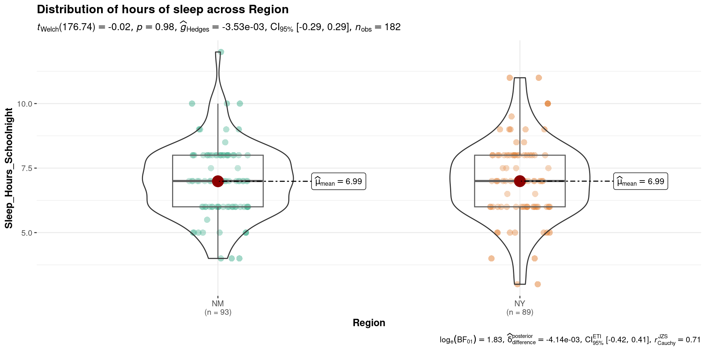
Interpreting and writing up an independent samples t-test
The first sentence usually conveys some descriptive information about the two groups you were comparing. Then you identify the type of test you conducted and what was determined (be sure to include the “stat block” here as well with the t-statistic, df, p-value, CI and Effect size). Finish it up by putting that into person words and saying what that means.
The mean amount of sleep in New Mexico for youth was 6.989 (SD = 1.379), while the mean in New York was 6.994 (SD = 1.512). A Student’s independent samples t-test showed that there was not a significant mean difference (t(180)=-0.024, p=.981, \(CI_{95}\)=[-0.43, 0.42], d=.004). This suggests that there is no difference between youth in NM and NY on amount of sleep on school nights.
Paired Samples \(t\)-Test
Chapter 13.5 - Learning Stats with R
Also called “Dependent Samples t-test”
We have been testing means between two independent samples. Participants may be randomly assigned to the separate groups
- This is limited to those types of study designs, but what if we have repeated measures?
We will then need to compare scores across people…the samples we are comparing now depend on one another and are paired
Paired Samples \(t\)-test
Each of the repeated measures (or pairs) can be viewed as a difference score
This reduces the analysis to a one-sample t-test of the difference score
- We are comparing the sample (i.e., difference scores) to a population \(\mu\) = 0
Assumptions: Paired Samples
The variable of interest (difference scores):
Continuous (Interval/Ratio)
Have 2 groups (and only two groups) that are matched
Normally Distributed
Why paired samples??
Previously, we looked at independent samples \(t\)-tests, which we could do here as well (nobody will yell at you)
However, this would violate the assumption that the data points are independent of one another!
Within vs. Between-subjects
Within vs. Between Subjects

Paired Samples: Single Sample
Instead of focusing on these variables as being separate/independent, we need to be able to account for their dependency on one another
This is done by calculating a difference or change score for each participant
\[ D_i = X_{i1} - X_{i2} \]
Notice: The equation is set up as variable1 minus variable2. This will be important when we interpret the results
Paired Samples: Hypotheses & \(t\)-statistic
The hypotheses would then be:
\[ H_0: \mu_D = 0; H_1: \mu_D \neq 0 \]
And to calculate our t-statistic: \(t_{df=n-1} = \frac{\bar{D}}{SE(D)}\)
where the Standard Error of the difference score is: \(\frac{\hat{\sigma_D}}{\sqrt{N}}\)
Review of the t-test process
Collect Sample and define hypotheses
Set alpha level
Determine the sampling distribution (\(t\) distribution for now)
Identify the critical value that corresponds to alpha and df
Calculate test statistic for sample collected
Inspect & compare statistic to critical value; Calculate probability
Example 1: Simple
Participants are placed in two differently colored rooms and are asked to rate overall happiness levels after each
Hypotheses:
\(H_0:\) There is no difference in ratings of happiness between the rooms ( \(\mu = 0\) )
\(H_1:\) There is a difference in ratings of happiness between the rooms ( \(\mu \neq 0\) )
| Participant | Blue Room Score | Orange Room Score | Difference (\(X_{iB} - X_{iO}\)) |
|---|---|---|---|
| 1 | 3 | 6 | -3 |
| 2 | 9 | 9 | 0 |
| 3 | 2 | 10 | -8 |
| 4 | 9 | 6 | 3 |
| 5 | 5 | 2 | 3 |
| 6 | 5 | 7 | -2 |
Determining \(t\)-crit
Can look things up using a t-table where you need the degrees of freedom and the alpha
But we have R to do those things for us:
Calculating t
Let’s get all of the information for the sample we are focusing on (difference scores):
Calculating t
Now we can calculate our \(t\)-statistic: \[t_{df=n-1} = \frac{\bar{D}}{\frac{sd_{diff}}{\sqrt{n}}}\]
Make a decision
Hypotheses:
\(H_0:\) There is no difference in ratings of happiness between the rooms ( \(\mu = 0\) )
\(H_1:\) There is a difference in ratings of happiness between the rooms ( \(\mu \neq 0\) )
| \(alpha\) | \(t-crit\) | \(t-statistic\) | \(p-value\) |
|---|---|---|---|
| 0.05 | \(\pm\) -2.57 | -0.69 | 0.52 |
What can we conclude??
Example 2: Data in R
We will use the same dataset that we have in the last few classes
Let’s Look at the data
Research Question: Is there a difference between school nights and weekend nights for amount of time slept?
Only looking at the variables that we are potentially interested in:
state_school %>%
select(Gender, Ageyears, Sleep_Hours_Schoolnight, Sleep_Hours_Non_Schoolnight) %>%
head() #look at first few observations Gender Ageyears Sleep_Hours_Schoolnight Sleep_Hours_Non_Schoolnight
1 Female 16 8.0 13
2 Male 17 8.0 9
3 Female 19 8.0 7
4 Male 17 8.0 9
5 Male 16 8.5 5
6 Female 11 11.0 12Difference Score
This can be done in a couple different ways and sometimes you will see things computed this way:
However, we like the tidyverse so why don’t we use the mutate() function
And I always overdo things, so I am going to make a new dataset that only has the variables that I’m interested in (sleep_state_school)
Code
Gender Ageyears Sleep_Hours_Schoolnight Sleep_Hours_Non_Schoolnight
1 Female 16 8.0 13
2 Male 17 8.0 9
3 Female 19 8.0 7
4 Male 17 8.0 9
5 Male 16 8.5 5
6 Female 11 11.0 12
sleep_diff
1 -5.0
2 -1.0
3 1.0
4 -1.0
5 3.5
6 -1.0Visualizing
Now that we have our variable of interest, let’s take a look at it!
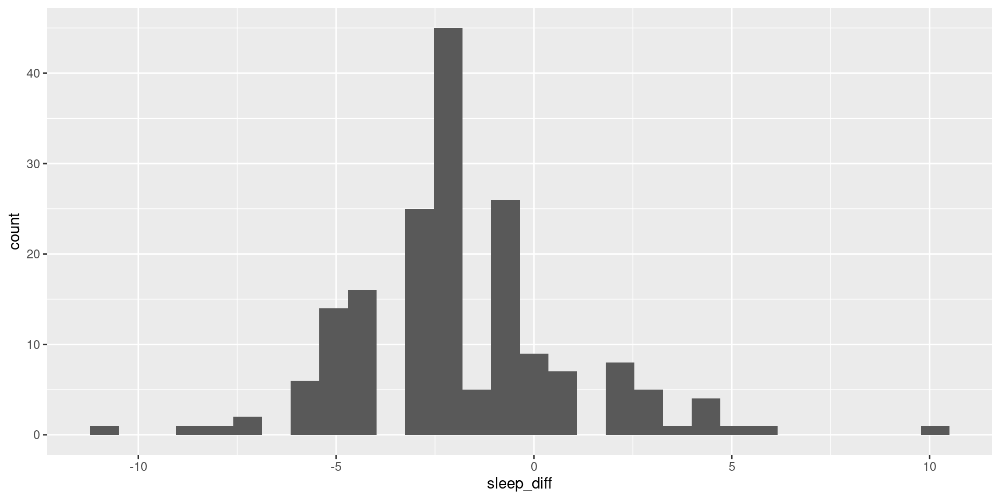
Doing the test in R: One Sample
Since we have calculated the difference scores, we can basically just do a one-sample t-test with the lsr library
One sample t-test
Data variable: sleep_state_school$sleep_diff
Descriptive statistics:
sleep_diff
mean -1.866
std dev. 2.741
Hypotheses:
null: population mean equals 0
alternative: population mean not equal to 0
Test results:
t-statistic: -9.106
degrees of freedom: 178
p-value: <.001
Other information:
two-sided 95% confidence interval: [-2.27, -1.462]
estimated effect size (Cohen's d): 0.681 Doing the test in R: Paired Sample
Maybe we want to keep things separate and don’t want to calculate separate values. We can use pairedSamplesTTest() instead!
pairedSamplesTTest(
formula = ~ Sleep_Hours_Schoolnight + Sleep_Hours_Non_Schoolnight,
data = sleep_state_school
)
Paired samples t-test
Variables: Sleep_Hours_Schoolnight , Sleep_Hours_Non_Schoolnight
Descriptive statistics:
Sleep_Hours_Schoolnight Sleep_Hours_Non_Schoolnight difference
mean 6.992 8.858 -1.866
std dev. 1.454 2.412 2.741
Hypotheses:
null: population means equal for both measurements
alternative: different population means for each measurement
Test results:
t-statistic: -9.106
degrees of freedom: 178
p-value: <.001
Other information:
two-sided 95% confidence interval: [-2.27, -1.462]
estimated effect size (Cohen's d): 0.681 Doing the test in R: Classic Edition
As you Google around to figure things out, you will likely see folks using `t.test()
t.test(
x = sleep_state_school$Sleep_Hours_Schoolnight,
y = sleep_state_school$Sleep_Hours_Non_Schoolnight,
paired = TRUE
)
Paired t-test
data: sleep_state_school$Sleep_Hours_Schoolnight and sleep_state_school$Sleep_Hours_Non_Schoolnight
t = -9.1062, df = 178, p-value < 0.00000000000000022
alternative hypothesis: true mean difference is not equal to 0
95 percent confidence interval:
-2.270281 -1.461563
sample estimates:
mean difference
-1.865922 Reporting \(t\)-test
The first sentence usually conveys some descriptive information about the sample you were comparing (e.g., pre & post test).
Then you identify the type of test you conducted and what was determined (be sure to include the “stat block” here as well with the t-statistic, df, p-value, CI and Effect size).
Finish it up by putting that into person words and saying what that means.
ANOVA (Analysis of Variance)
What is ANOVA? (LSR Ch. 14)
- ANOVA stands for Analysis of Variance
- Comparing means between two or more groups (usually 3 or more)
- Continuous outcome and grouping variable with 2 or more levels
- Under the larger umbrella of general linear models
- ANOVA is basically a regression with only categorical predictors
- Likely the most widely used tool in Psychology
Different Types of ANOVA
One-Way ANOVA
Two-Way ANOVA
Repeated Measures ANOVA
ANCOVA
MANOVA
One-Way ANOVA
Goal: Inform of differences among the levels of our variable of interest (Omnibus Test)
- But cannot tell us more than that…
Hypotheses:
\[ H_0: it\: is\: true\: that\: \mu_1 = \mu_2 = \mu_3 =\: ...\mu_k \\ H_1: it\: is\: \boldsymbol{not}\: true\: that\: \mu_1 = \mu_2 = \mu_3 =\: ...\mu_k \]
Wait…Means or Variance?
We are using the variance to create a ratio (within group versus between group variance) to determine differences in means
- We are not directly investigating variance, but operationalize variance to create the ratio:
\[ F_{df_b, \: df_w} = \frac{MS_{between}}{MS_{within}} \]

\(F = \frac{MS_{between}}{MS_{within}} = \frac{small}{large} < 1\)
\(F = \frac{MS_{between}}{MS_{within}} = \frac{large}{small} > 1\)
ANOVA: Assumptions
Independence
- Observations between and within groups should be independent. No autocorrelation
Homogeneity of Variance
- The variances within each group should be roughly equal
- Levene’s test –> Welch’s ANOVA for unequal variances
Normality
- The data within each group should follow a normal distribution
- Shapiro-Wilk test –> can transform the data or use non-parametric tests
NHST with ANOVA
Review of the NHST process
Collect Sample and define hypotheses
Set alpha level
Determine the sampling distribution (will be using \(F\)-distribution now)
Identify the critical value
Calculate test statistic for sample collected
Inspect & compare statistic to critical value; Calculate probability
Steps to calculating F-ratio
- Capture variance both between and within groups
- Variance to Sum of Squares
- Degrees of Freedom
- Mean squares values
- F-Statistic
Capturing Variance
We have calculated variance before!
\[ Var = \frac{1}{N}\sum(x_i - \bar{x})^2 \]
Now we have to take into account the variance between and within the groups:
\[ Var(Y) = \frac{1}{N} \sum^G_{k=1}\sum^{N_k}_{i=i}(Y_{ik} - \bar{Y})^2 \]
Notice that we have the summation across each group ( \(G\) ) and the person in the group ( \(N_k\) )
Variance to Sum of Squares
Total Sum of Squares - Adding up the sum of squares instead of getting the average (notice the removal of \(\frac{1}{N}\))
\[ SS_{total} = \sum^G_{k=1}\sum^{N_k}_{i=i}(Y_{ik} - \bar{Y})^2 \]
Can be broken up to see what is the variation between the groups AND the variation within the groups
\[ SS_{total}=SS_{between}+SS_{within} \]
This gets us closer to understanding the difference between means
Sum of Squares
Sum of Squares
\[ SS_{total}=SS_{between}+SS_{within} \]
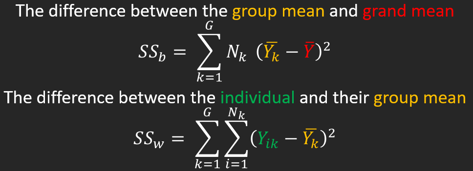
Example Data
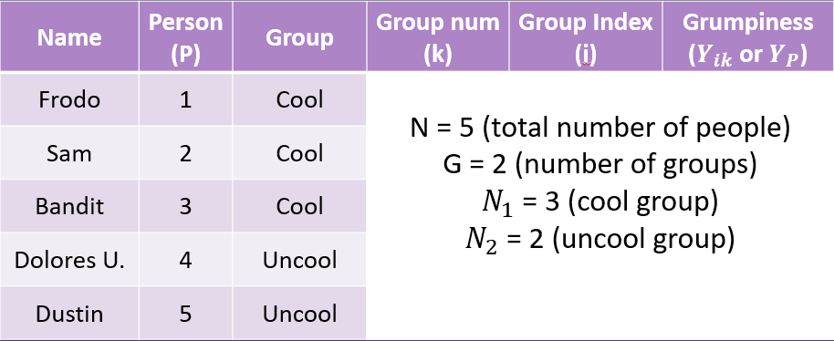
Example Data
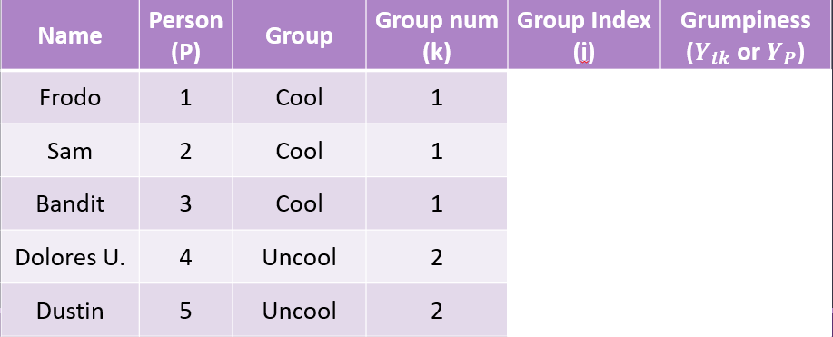
Example Data
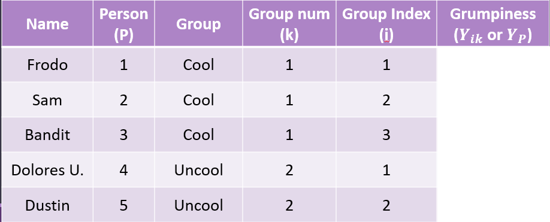
Example Data
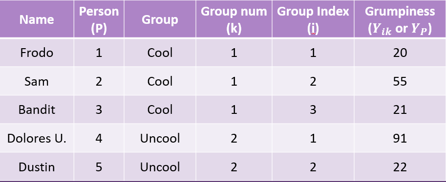
Sum of Squares - Between
The difference between the group mean and grand mean
\[ SS_{between} = \sum^G_{k=1}N_k(\bar{Y_k} - \bar{Y})^2 \]
| Group | Group Mean \(\bar{Y_k}\) | Grand Mean \(\bar{Y}\) |
|---|---|---|
| Cool | 32 | 41.8 |
| Uncool | 56.5 | 41.8 |
Sum of Squares - Between
The difference between the group mean and grand mean
\[ SS_{between} = \sum^G_{k=1}N_k(\bar{Y_k} - \bar{Y})^2 \]
| Group | Group Mean \(\bar{Y_k}\) | Grand Mean \(\bar{Y}\) | Sq. Dev. | N | Weighted Sq. Dev. |
|---|---|---|---|---|---|
| Cool | 32 | 41.8 | 96.04 | 3 | 288.12 |
| Uncool | 56.5 | 41.8 | 216.09 | 2 | 432.18 |
Sum of Squares - Between
The difference between the group mean and grand mean
\[ SS_{between} = \sum^G_{k=1}N_k(\bar{Y_k} - \bar{Y})^2 \]
Now we can sum the Weighted Squared Deviations together to get our Sum of Squares Between:
Sum of Squares - Within
The difference between the individual and their group mean
\[ SS_{within} = \sum^G_{k=1}\sum^{N_k}_{i=i}(Y_{ik} - \bar{Y_k})^2 \]
| Name | Grumpiness \(Y_{ik}\) | Group Mean \(\bar{Y_K}\) |
|---|---|---|
| Frodo | 20 | 32 |
| Sam | 55 | 32 |
| Bandit | 21 | 32 |
| Dolores U. | 91 | 56.5 |
| Dustin | 22 | 56.5 |
Sum of Squares - Within
The difference between the individual and their group mean
\[ SS_{within} = \sum^G_{k=1}\sum^{N_k}_{i=i}(Y_{ik} - \bar{Y_k})^2 \]
| Name | Grumpiness \(Y_{ik}\) | Group Mean \(\bar{Y_K}\) | Sq. Dev |
|---|---|---|---|
| Frodo | 20 | 32 | 144 |
| Sam | 55 | 32 | 529 |
| Bandit | 21 | 32 | 121 |
| Dolores U. | 91 | 56.5 | 1190.25 |
| Dustin | 22 | 56.5 | 1190.25 |
Sum of Squares - Within
The difference between the individual and their group mean
\[ SS_{within} = \sum^G_{k=1}\sum^{N_k}_{i=i}(Y_{ik} - \bar{Y_k})^2 \] Now we can sum the Squared Deviations together to get our Sum of Squares Within:
Sum of Squares
Can start to have an idea of what this looks like
\[ SS_{between} = \sum^G_{k=1}N_k(\bar{Y_k} - \bar{Y})^2 = 720.3 \]
\[ SS_{within} = \sum^G_{k=1}\sum^{N_k}_{i=i}(Y_{ik} - \bar{Y_k})^2 = 3174.5 \]
Next we have to take into account the degrees of freedom
Degrees of Freedom - ANOVA
Degrees of Freedom
Since we have 2 types of variations that we are examining, this needs to be reflected in the degrees of freedom
Take the number of groups and subtract 1
\(df_{between} = G - 1\)Take the total number of observations and subtract the number of groups
\(df_{within} = N - G\)
Mean Squares
Calculating Mean Squares
Next we convert our summed squares value into a “mean squares”
This is done by dividing by the respective degrees of freedom
\[ MS_b = \frac{SS_b}{df_b} \]
\[ MS_W = \frac{SS_w}{df_w} \]
Calculating Mean Squares - Example
Let’s take a look at how this applies to our example: \[ MS_b = \frac{SS_b}{G-1} = \frac{720.3}{2-1} = 720.3 \]
\[ MS_W = \frac{SS_w}{N-G} = \frac{3174.5}{5-2} = 1058.167 \]
\(F\)-Statistic
Calculating the F-Statistic
\[F = \frac{MS_b}{MS_w}\]
If the null hypothesis is true, \(F\) has an expected value close to 1 (numerator and denominator are estimates of the same variability)
If it is false, the numerator will likely be larger, because systematic, between-group differences contribute to the variance of the means, but not to variance within group.
Code
data.frame(F = c(0,8)) %>%
ggplot(aes(x = F)) +
stat_function(fun = function(x) df(x, df1 = 3, df2 = 196),
geom = "line") +
stat_function(fun = function(x) df(x, df1 = 3, df2 = 196),
geom = "area", xlim = c(2.65, 8), fill = "purple") +
geom_vline(aes(xintercept = 2.65), color = "purple") +
scale_y_continuous("Density") + scale_x_continuous("F statistic", breaks = NULL) +
theme_bw(base_size = 20)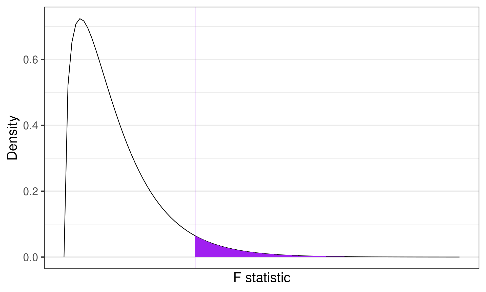
If data are normally distributed, then the variance is \(\chi^2\) distributed
\(F\)-distributions are one-tailed tests. Recall that we’re interested in how far away our test statistic from the null \((F = 1).\)
Calculating F-statistic: Example
\[F = \frac{MS_b}{MS_w} = \frac{720.3}{1058.167} = 0.68\]
Link to probability calculator
Code
data.frame(F = c(0,8)) %>%
ggplot(aes(x = F)) +
stat_function(fun = function(x) df(x, df1 = 3, df2 = 196),
geom = "line") +
stat_function(fun = function(x) df(x, df1 = 3, df2 = 196),
geom = "area", xlim = c(2.65, 8), fill = "purple") +
geom_vline(aes(xintercept = 2.65), color = "purple") +
geom_vline(aes(xintercept = 0.68), color = "red") +
annotate("text",
label = "F=0.68",
x = 1.1, y = 0.65, size = 8, color = "red") +
scale_y_continuous("Density") + scale_x_continuous("F statistic", breaks = NULL) +
theme_bw(base_size = 20)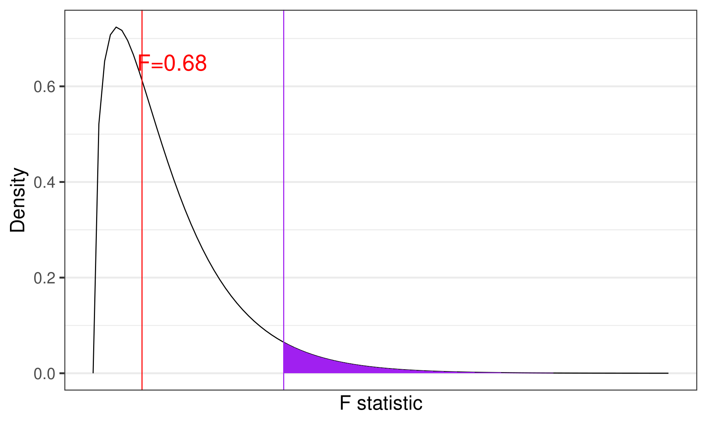
What can we conclude?
Contrasts/Post-Hoc Tests
Performed when there is a significant difference among the groups to examine which groups are different
- Contrasts: When we have a priori hypotheses
- Post-hoc Tests: When we want to test everything
Reporting Results
Tables
Often times the output will be in the form of a table and then it is often reported this way in the manuscript
| Source of Variation | df | Sum of Squares | Mean Squares | F-statistic | p-value |
|---|---|---|---|---|---|
| Group | \(G-1\) | \(SS_b\) | \(MS_b = \frac{SS_b}{df_b}\) | \(F = \frac{MS_b}{MS_w}\) | \(p\) |
| Residual | \(N-G\) | \(SS_w\) | \(MS_w = \frac{SS_w}{df_w}\) | ||
| Total | \(N-1\) | \(SS_{total}\) |
In-Text
A one-way analysis of variance was used to test for differences in the [variable of interest/outcome variable] as a function of [whatever the factor is]. Specifically, differences in [variable of interest] were assessed for the [list different levels and be sure to include (M= , SD= )] . The one-way ANOVA revealed a significant/nonsignificant effect of [factor] on scores on the [variable of interest] (F(dfb, dfw) = f-ratio, p = p-value, η2 = effect size).
Planned comparisons were conducted to compare expected differences among the [however many groups] means. Planned contrasts revealed that participants in the [one of the conditions] had a greater/fewer [variable of interest] and then include the p-value. This same type of sentence is repeated for whichever contrasts you completed. Descriptive statistics were reported in Table 1.